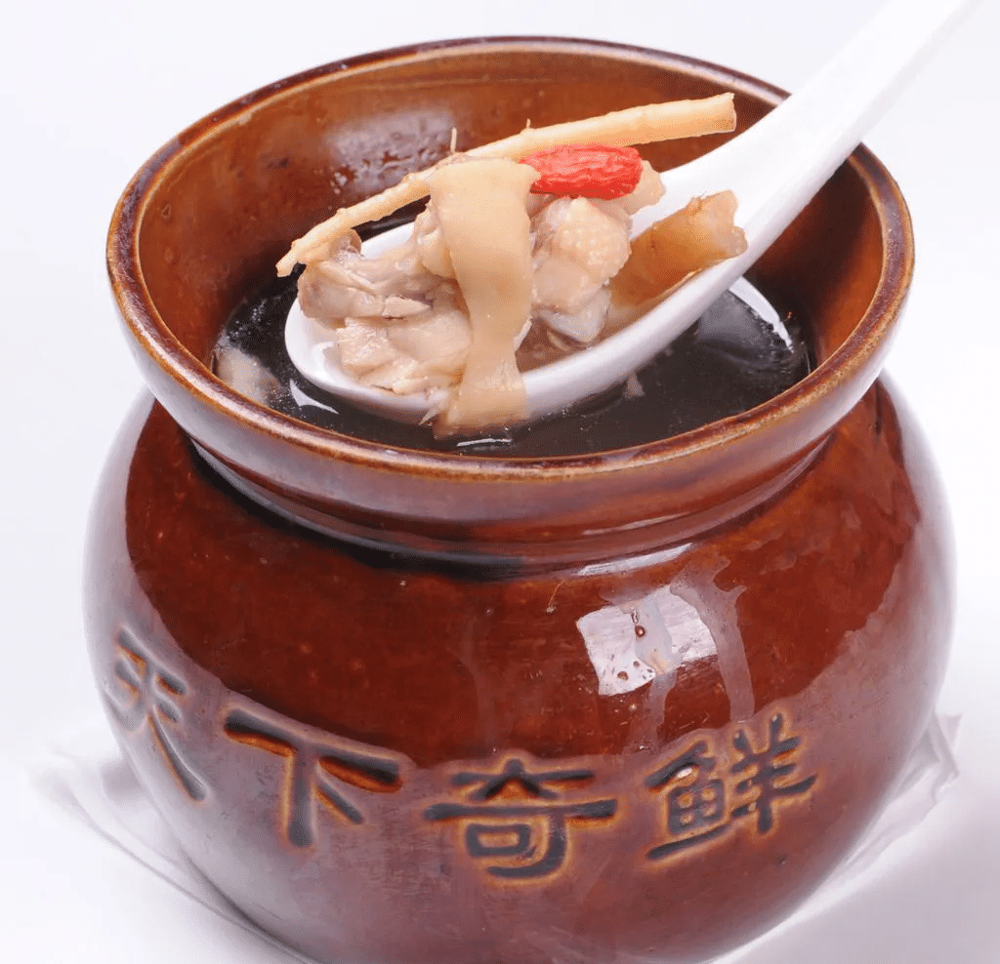
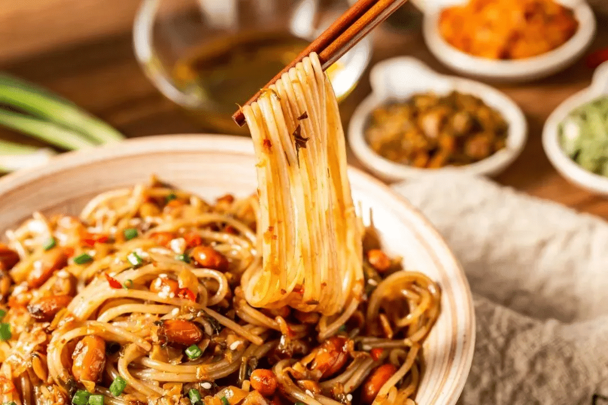
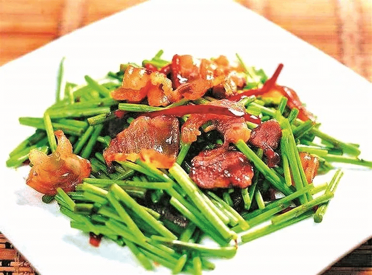

南昌美食文化
瓦罐汤
瓦罐汤是南昌最具代表性的传统小吃之一，已有千年历史。其制作工艺独特，采用小瓦罐密封，以炭火慢煨数小时，使食材精华充分融入汤中。
常见品种有鸡蛋肉饼汤、墨鱼肉饼汤、香菇排骨汤等，汤色清澈、味道醇厚、营养丰富，被誉为“南昌人的早餐灵魂”。
清晨街巷间，一碗热腾腾的瓦罐汤配一碟南昌拌粉，是本地人最地道的开启方式。
南昌拌粉
南昌拌粉以江西优质晚米制成的米粉为主料，口感爽滑有韧性。食用时加入酱油、香油、辣椒油、蒜末、萝卜干、花生米等十余种调料拌匀而成。
其特点是“干、香、辣、鲜”，酸豆角与腌菜的加入更添风味层次。作为南昌街头巷尾最常见的快餐，拌粉承载着无数游子的乡愁记忆。
2023年，“南昌拌粉制作技艺”被列入江西省非物质文化遗产名录。
藜蒿炒腊肉
藜蒿炒腊肉是南昌鄱阳湖地区的经典家常菜，素有“鄱阳湖草第一菜”之称。藜蒿取自湖滩野生植物，清香脆嫩；腊肉则选用本地土猪肉腌制风干，咸香浓郁。
二者同炒，荤素相宜，香气扑鼻，既保留了野菜的清新，又融合了腊肉的醇厚，完美体现赣菜“鲜、香、辣、原”的特点。
苏轼曾赞“藜蒿满地芦芽短，正是河豚欲上时”，可见其自古便是江南春日佳蔬。